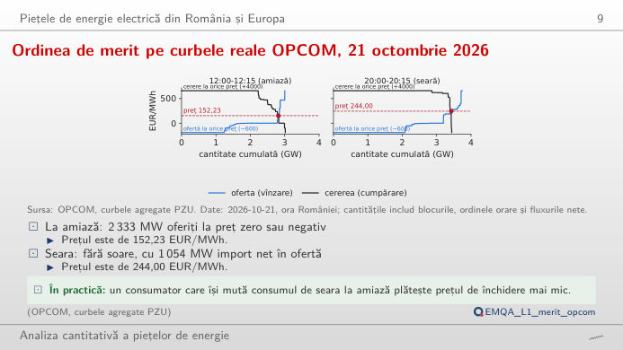
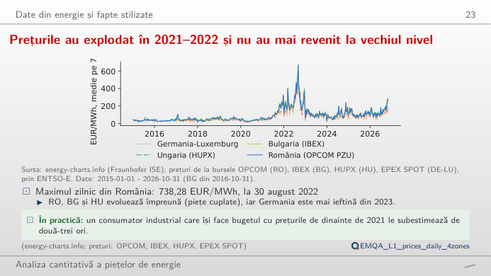
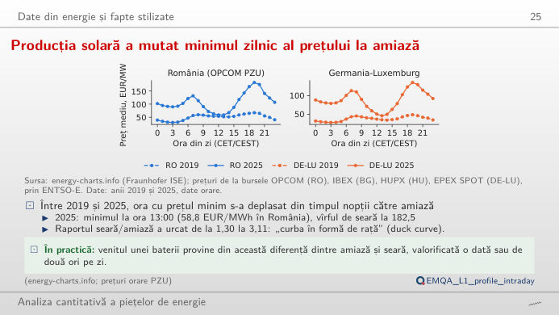
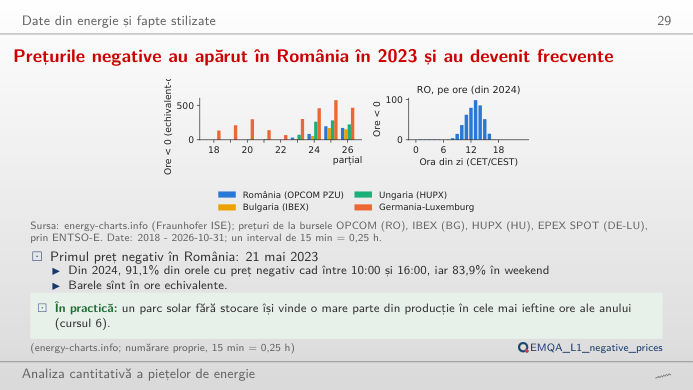
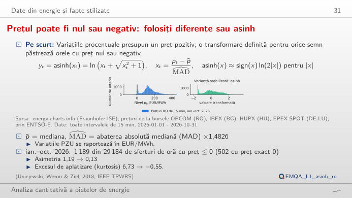
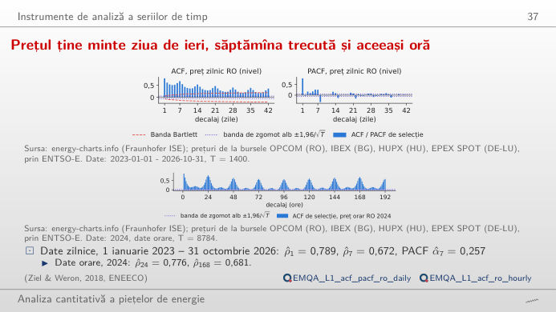

În stînga este slide-ul din curs, în dreapta aceeași figură, recalculată în browser din datele cursului (data/clean) cînd modificați un control. Butonul ▶ modifică parametrul principal pas cu pas. Sub fiecare figură: o sinteză numerică, o întrebare pentru sală și Quantlet-ul cu codul figurii.
Piețele de energie electrică din România și Europa · Datele din energie și faptele stilizate · Instrumente pentru serii de timp
Piețele de energie electrică din România și Europa
Ordinea de merit pe curbele reale OPCOM, 21 octombrie 2026

Răspuns
Circa 50 MW. Lîngă punctul de intersecție, curba cererii este aproape verticală: cumpărătorii cer aproximativ 2.816 MW la 152 EUR/MWh și doar cu circa 11 MW mai mult la 0 EUR/MWh. Cu 25 MW de ofertă în plus, curbele publicate se intersectează la 131,40 EUR/MWh, iar cu 50 MW la 0,68 EUR/MWh. În intervalul de seară, curbele se intersectează pe un segment vertical (orice preț între 206,49 și 247,00 EUR/MWh închide 3.423 MW; prețul oficial este 244,00 EUR/MWh), iar 300 MW la preț zero duc prețul la 0. Cererea inelastică la preț explică de ce o oră însorită poate face prețul negativ.
Datele din energie și faptele stilizate
Prețurile au explodat în 2021–2022 și nu au mai revenit la vechiul nivel

Răspuns
Alegeți începutul în 2022 și păstrați România și Germania–Luxemburg: mediile pe 30 de zile se separă pe perioade lungi, cu România peste Germania în fiecare vară din 2022 pînă în 2026 (mediile iunie–august). Cuplarea piețelor egalizează prețurile numai cînd interconexiunile nu sînt congestionate; sinteza dă media și abaterea standard a fiecărei zone pe perioada aleasă.
Producția solară a mutat minimul zilnic al prețului la amiază

Răspuns
Nu. În 2016, ca și în 2019, ora cea mai ieftină este 03:00, ca într-o piață determinată de consum; în 2025 este 13:00 (58,8 EUR/MWh), din cauza creșterii capacității solare. Ora cea mai scumpă rămîne 19:00, dar raportul 19:00 / 13:00 crește de la 1,30 în 2019 la 3,11 în 2025. Alegeți vara pentru a vedea „curba rață” (duck curve) cea mai adîncă; panoul din dreapta împarte fiecare oră la media zilei, deci compară ani cu niveluri diferite ale prețului.
Prețurile negative au apărut în România în 2023 și au devenit frecvente

Răspuns
În jurul amiezii, cînd producția solară este maximă: în 2025, 95% dintre orele cu preț negativ sînt între 10:00 și 16:00, cel mai des la 13:00. Din 2024, 84% dintre ele cad în weekend, iar din 2023 aproximativ jumătate în aprilie și mai (cifrele din curs). Ridicați pragul la 0 EUR/MWh și peste: numărul orelor foarte ieftine crește mai repede decît cel al orelor strict negative.
Prețul poate fi nul sau negativ: folosiți diferențe sau asinh

Răspuns
Logaritmul nu este definit pentru prețuri zero sau negative. Sinusul hiperbolic invers, asinh((p − mediana)/(c·MAD)), unde MAD este abaterea absolută mediană, se comportă ca un logaritm în cozi și aproape liniar lîngă mediană, și acceptă orice semn. Pentru România în 2025, c = 1 reduce asimetria de la 0,90 la 0,09 și excesul de kurtosis de la 4,24 la −0,24; un c mai mic comprimă și mai mult cozile (exces de kurtosis negativ), un c mai mare lasă seria mai aproape de prețurile brute.
Instrumente pentru serii de timp
Prețul ține minte ziua de ieri, săptămîna trecută și aceeași oră

Răspuns
Prețul orei h depinde de aceeași oră din ziua anterioară și din aceeași zi a săptămînii trecute: sezonalitate zilnică și săptămînală (România, 2025: ρ(24) = 0,777, ρ(168) = 0,724). Un model pentru ziua următoare folosește deci lagurile 24 (d−1), 48 (d−2) și 168 (d−7), ca modelul ARX (autoregresiv cu variabile exogene) din Cursul 2. Diferența față de aceeași oră de ieri face ρ(24) negativ (−0,263, semnul obișnuit după o diferență sezonieră) și păstrează un vîrf săptămînal (ρ(168) = 0,296).
Prețuri pentru ziua următoare: OPCOM PZU (România), IBEX (Bulgaria), HUPX (Ungaria), EPEX (Germania–Luxemburg), prin energy-charts.info (Fraunhofer ISE). Curbele agregate de cerere și ofertă: OPCOM, PZU, ziua de livrare 21 octombrie 2026. Ora zilei în ora Europei Centrale (CET/CEST); din 1 octombrie 2025, prețurile pe 15 minute sînt mediate pe oră (profiluri, ACF) sau numărate ca sferturi de oră (orele negative). Date pînă la data-limită a cursului.